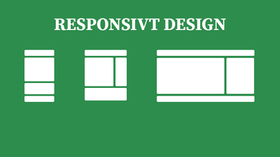

SASS: CSS med mindre kode og mer funksjonalitet

Det er ikke så morsomt så scrolle ned hundrevis av linjer for å finne den ene knappen du skal endre fargen på.
SASS hjelper oss på mange måter å strukturere stilene til nettsiden vår, som gjør det enklere å opprettholde samt tilbyr mer funksjonalitet enn vanlig CSS.
Les artikkel
Responsivt design: Media queries, typer og fleksibilitet

I en verden som hele tiden endrer seg og med haugevis av nye mobiler, tablets og skjermer hvert år er det viktig at siden vår tilpasser seg disse.
Innholdet vårt skal se bra ut, uansett skjermstørrelse.
Les artikkel
HTML5: Video og audio på nettet, hvordan?
Noen ganger er ikke bilder nok for å få frem et budskap, eller vise hva eller hvordan noe fungerer eller gjøres.
HTML har både innebygde elementer for å vise video og lyd, med mye funksjonalitet som kan brukes for å gjøre innholdet tilgjengelig og brukervennlig.
Les artikkel
HTML-skjemaer: Brukerinput og interraksjon

HTML-skjemaer lar brukeren samhandle med nettsiden og legge inn brukerinput, som senere kan
behandles av webserveren. Ved bruk av skjemaer, kan sluttbrukeren interragere med nettsiden på måter
som ikke hadde vært mulig uten skjemaene.
Les artikkel
Media queries: Dynamisk tilpasning av innhold

Noen ganger har man behov for å tilpasse måten innholdet på nettsiden blir vist til brukeren, basert
på hvilken enhet den vises på. Dette kan vi løse med media queries. Media queries tillater oss å
skrive CSS basert på spesifikke tilstander, f.eks. skjermstørrelsen til brukeren.
Les artikkel
CSS layouts: Grid, flexbox og andre layout verktøy
Det er mange måter man kan strukturere innholdet på nettsiden sin. Flere verktøy er tilgjengelig for
å gjøre dette, blant annet grid og flexbox, som tillater oss å plassere elementer der vi vil de skal
være uten mye styr.
Les artikkel
Oppgave 1: Planlegging, skrifttyper, farger og wireframes

Her beskriver jeg min løsning for oppgave 1 som inneholder planlegging av nettsiden. Jeg viser
hvilke skrifttyper og farger jeg valgte, og mine wireframes.
Les artikkel